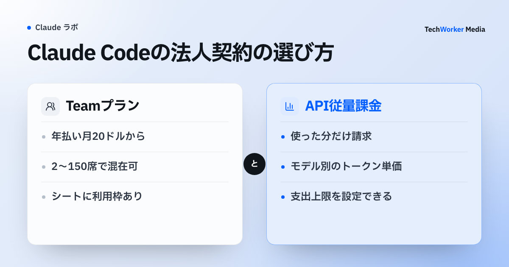
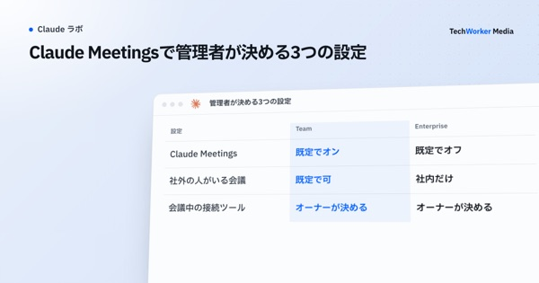
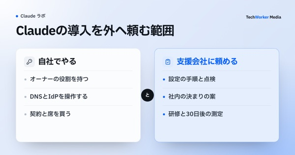
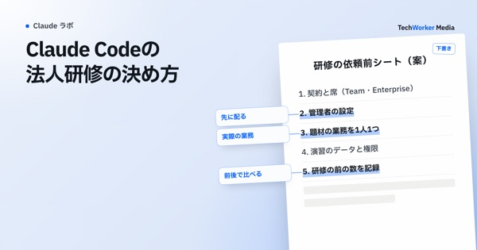
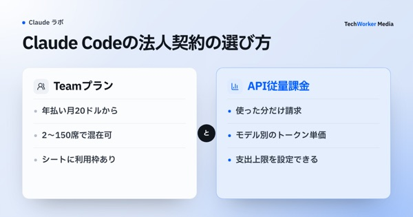

Claude を、会社で使える形にする。
Claude と Claude Code を法人で使うときの判断を扱うメディアです。Team・Enterprise・API の契約と料金、管理者の設定とセキュリティ、Claude Code の社内展開と研修、新しい機能の使いどころを書いています。料金や機能は Anthropic の公式資料で確かめ、確かめた日付を記事に書いています。
いちばん読まれている記事

料金と比較
Claudeの法人契約と料金｜Team・Enterprise・APIとClaude Codeの選び方
Claudeの法人契約は、Team・Enterprise・API従量の3つです。Teamは1人月20ドルから（年払い）で、支払いはカードだけです。請求書払いは営業経由のEnterpriseです。料金表、日本円の目安、適格請求書、稟議の手順を公式資料（2026年11月21日確認）で整理します。
更新 2026.11.21
記事を読む →記事一覧
すべて：9件

社内ルールと安全
2026.11.20
Claude Meetingsとは｜Google MeetのAI議事録の料金と、管理者が決める3つの設定
Claude Meetingsは、ClaudeがGoogle Meetの会議に参加者として入り、議事録と資料を作る機能です。2026年11月12日にTeamとEnterpriseでベータ提供が始まりました。Teamは既定でオンです。料金、3つの設定、同意の文例を公式情報（2026年11月20日確認）で整理します。
情シス・AI導入担当→

料金と比較
2026.11.18
Claude Enterpriseの予算管理｜部署ごとの共有予算・コストコード・利用レポートの設定
Claude Enterpriseでは、部署などのグループごとに月の共有予算を置けます。50・75・95・100%で課金の権限を持つ人にメールが届き、使い切ると止まります。コストコードでの集計と利用レポートも含め、設定の場所と稟議に書くことを公式ヘルプ（2026年11月18日確認）で整理します。
情シス・AI導入担当→

導入と業務への組み込み
2026.11.17
Claudeの導入支援・設定代行は何を頼めるか｜自社でやる設定と外へ出す範囲の分け方
Claudeの導入支援・設定代行で頼めることを、Team・Enterpriseの管理作業ごとに整理します。SSOや連携、保持期間の設定はオーナー以上の権限が要り、DNSとIdPの操作も自社に残ります。外へ出す範囲の分け方と頼む前の準備を、公式ヘルプ（2026年11月17日確認）で解説します。
情シス・AI導入担当→

料金と比較
2026.11.12
Claude Fable 5.2の料金と法人利用｜Team・Enterpriseでの使い方と、管理者が11月16日までに決めること
Claude Fable 5.2は2026年11月9日に出た上位モデルで、APIは100万トークン当たり入力8ドル・出力40ドルです。Teamのプレミアム席は週の利用枠の半分まで追加料金なし、標準席は使った分の支払いです。公式情報（11月12日確認）で整理します。
情シス・AI導入担当→

研修の設計と運営
2026.11.12
Claude Codeの法人研修｜対象者・内容・日数・費用の決め方と、依頼前に決める5つのこと
Claude Codeの法人研修は、コードを書かない部署でも受けられます。対象者・内容・日数・費用の決め方と、契約や管理者の設定など依頼前に決める5つのことを、公式資料（2026年11月12日確認）とTechWorkerの研修の組み方で示します。
人事・研修担当→

社内ルールと安全
2026.11.10
Claude Enterpriseのセキュリティセンター｜推奨の設定と見比べる手順
11月5日、Claude Enterpriseにセキュリティセンター（ベータ）が加わりました。今の設定とAnthropicの推奨の値を1ページで見比べられます。開ける人、見える内容、社内の点検での使い方を示します。
情シス・AI導入担当→

導入と業務への組み込み
2026.10.07
ClaudeをGoogle Docs・Sheets・Slidesで使う｜承認と保存の確認点
Google Workspace用のClaudeアドオンが公開ベータに入りました。情シスは、対象ファイル、編集の承認範囲、保存条件をそろえてから試行を始めます。
情シス・AI導入担当→

Claude Codeの活用
2026.07.29
Claude Codeの社内展開｜社内データの扱い・設定配布・ルール雛形
Claude Codeの社内展開は契約とデータ方針、managed-settings.jsonによる設定配布、利用ルール、監査、パイロットからの段階展開の順で進めます。手順ごとに決めることと、利用ルールの雛形、展開前のチェックリストをまとめました。
情シス・AI導入担当→

料金と比較
2026.07.22
Claudeの法人契約と料金｜Team・Enterprise・APIとClaude Codeの選び方
Claudeの法人契約は、Team・Enterprise・API従量の3つです。Teamは1人月20ドルから（年払い）で、支払いはカードだけです。請求書払いは営業経由のEnterpriseです。料金表、日本円の目安、適格請求書、稟議の手順を公式資料（2026年11月21日確認）で整理します。
情シス・AI導入担当→
このメディアには、選んだ読者向けの記事がまだありません。
ほかのメディアを見る
資料
ほかの資料：Claude Code 法人導入 稟議書テンプレート／Claude Code 企業導入 セキュリティ＆セットアップ実践ガイド
このメディアについて
「Claude ラボ」は、生成AIの法人研修と導入支援を行う株式会社TechWorkerが運営するメディアです。TechWorker は Anthropic 社のスタートアップ支援プログラム「Claude for Startups」に採択されています。
記事は Anthropic の公式の料金表・ヘルプ・発表をもとに書き、料金や機能は確かめた日付を記事に書いています。